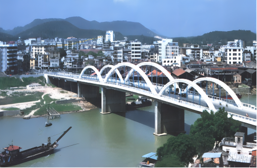
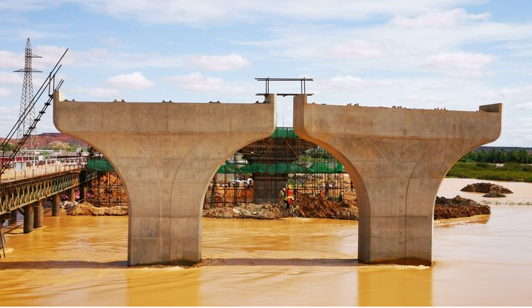
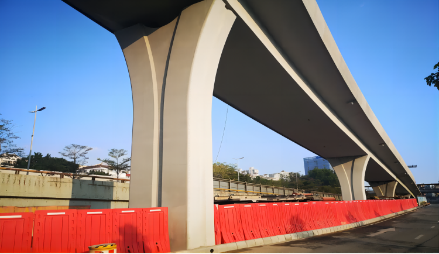
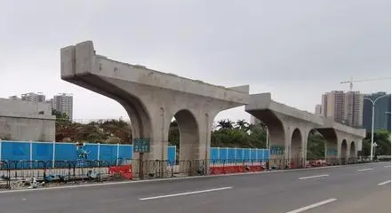
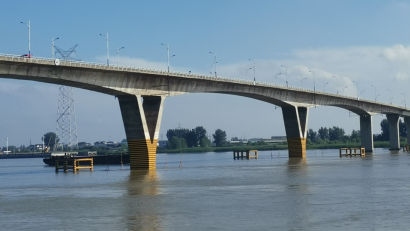

第二章 桥墩
第二章 桥墩
第一节 概述
[A6-2.1]桥墩是多跨桥梁的重要组成部分（图6-2-1），除了承受桥跨结构的荷载外，还承受流水压力（冰压力）、风荷载以及可能出现的地震作用或汽车、漂流物和船船舶的撞击作用等，此外，还应考虑施工时桥墩承受的临时荷载。因此，桥墩应具有足够的强度、刚度和稳定性。

图6-2-1 桥墩示意图
[A6-2.2]桥墩通常由墩帽、墩身和基础三部分组成。墩帽也称作顶帽（帽梁或盖梁），上面放置支承桥跨结构的支座，并且将支座传递的竖向反力、水平反力传递至墩身，因此，一般采用钢筋混凝土结构或钢结构。墩身上托墩帽（或盖梁）、下接基础，除承受墩帽传递的荷载外，还承受流水压力、冰压力、风荷载等，以及汽车、或漂流物、或船舶的撞击作用，因此，墩身类型选择、建筑材料选用等应全面考虑荷载影响。基础是连接墩身并坐落在土或岩石地基上的构造物，对地基的承载能力、沉降量、地基与基础之间的摩擦力等都有一定的要求，避免在荷载作用下产生危害桥梁整体结构安全的水平位移、竖向位移和转角位移。在桥梁设计中，墩帽、墩身和基础是作为一个整体进行设计的，但在课程学习中，墩台基础将在“基础工程”课程中介绍。
[A6-2.3]在桥梁总体设计中，除遵循安全、耐久等原则外，桥梁美学设计也日渐被重视。桥墩结构的美学设计，在桥梁总体造型中起着相当重要的作用。对于拱桥、斜拉桥等造型优美、独具风格的桥跨结构，桥墩美学设计需与之相协调，配合桥跨结构的整体建筑风格。对于结构造型相对平淡的梁桥，桥墩的美学设计与变化能够形成不同的风格，给人以鲜明印象（图6-2-2）。特别是在城市桥梁与高架桥中，桥墩结构的适宜造型，彰显桥墩在桥梁美学中的独特功能。
 a）奥地利维也纳普拉特高架桥(X形、v形)
a）奥地利维也纳普拉特高架桥(X形、v形)
b）澳大利亚芒特亨瑞桥（v形）
图6-2-2 桥墩造型示例
[A6-2.4]由于桥梁结构形式不同及所处工程环境不同，桥墩设计成不同的构造类型，与之相对应的施工方法也不尽相同。如何设计出适合桥梁结构的桥墩，应根据路线、地形、地质、水文、气象、环境、桥跨结构、作用效应、材料、施工条件和经济等因素综合考虑。本章将重点介绍工程中几种常用桥墩类型的构造、设计计算和施工方法。
[A6-2.5]桥墩从总体上可分为两大类：重力式桥墩和轻型桥墩。桥位所处环境的地形地貌、工程地质条件、水文条件、航道等级、抗震设计等因素都将影响桥墩类型选择、墩身截面形式选择和建筑材料选用。
[A6-2.6]重力式桥墩又称作实体式桥墩，在承受外力时，依靠自身及作用于其上的重力获得稳定的桥墩。由墩帽、实体墩身、基础组成，如图6-2-3所示。墩帽采用钢筋混凝土材料建造；墩身采用圬工材料（混凝土、石材）建造，取材方便，施工简易，坚固耐久，节约钢材。重力式桥墩墩身外形粗大，圬工体积较大，对船、漂流物、山坡落石、滚石的撞击、磨损或冰压力作用等的抵御能力较强。但阻水面积较大，增大地基负荷。适用于地基良好的大、中型桥梁，或流冰、漂浮物较多的河流中。

图6-2-3 梁桥重力式桥墩示意（圆端形墩身）
[A6-2.7]重力式桥墩按墩身截面形状可分为矩形墩、圆形墩、圆端形墩、尖端形墩等（图6-2-4）。矩形墩[图6-2-5a）]具有圬工量少，施工方便的优点，广泛用于无水或流量较小的旱桥、立交桥和不受水流方向影响、不受流冰撞击且靠近岸边的桥墩以及基础建筑在岩层上、桥孔无压缩和不通航的有水河流上的跨河桥。圆形墩适用于河流急弯，流向不固定和与水流斜交角度≥15°的桥梁上。圆端形桥墩[图6-2-5b）]适用于与水流斜交角度＜15°的桥梁。尖端形桥墩[图6-2-5c））]适用于与水流斜交角度＜5°及河床不允许有严重冲刷的小跨径桥梁。

图6-2-4 重力式桥墩墩身截面形式
 a）矩形墩
a）矩形墩
 b）圆端形墩
b）圆端形墩
 c）尖端形墩
c）尖端形墩
图6-2-5 重力式桥墩示例
[A6-2.8]为减小地基负荷，或为增大桥下净空，或为加快施工进度采用拼装结构，或美观要求等因素，需要减小墩身尺寸，降低桥墩自重，改变桥墩结构形式和受力状况，采用钢筋混凝土或预应力混凝土材料建造的桥墩为轻型桥墩。轻型桥墩较重力式桥墩自重轻，刚度小，受力后允许在一定范围内发生弹性变形。
[A6-2.9]轻型桥墩主要形式有柱式桥墩、板式桥墩、空心薄壁墩、框架墩等，墩身形式不同，墩帽（盖梁）形式也有差异，选用时必须根据结构构造要求、环境条件、美观要求等因素综合考虑确定。
（1）柱式桥墩
[A6-2.10]柱式桥墩是指墩身由单根或多根柱状体组成的桥墩。若柱下是桩基础，则称为桩柱式桥墩。柱式桥墩以结构轻盈、节省材料，对桥宽变化的适应性强而广泛应用于桥梁结构中，尤其是梁桥结构中。柱式桥墩的形式主要有单柱式、双柱式、多柱式、哑铃式以及混合双柱式，如图6-2-6所示。柱的截面形式有圆形、椭圆形、矩形、多边形等。

图6-2-6 柱式桥墩
[A6-2.11]单柱式桥墩[图6-2-6a）]，适用于水流与桥轴斜交角大于15°的桥梁，或河流急弯、流向不固定的桥梁。在具有抗扭刚度的桥跨结构中，这种单根立柱还能一起参与承受桥跨结构的扭力。在水流与桥轴斜交角小于15°，仅有较小的漂流物或轻微的流冰河流中，可采用双柱式[图6-2-6b）、图6-2-7a）]或多柱式墩[图6-2-6c）]，配以桩基础，具有施工便利、速度快、圬工体积小、工程造价低和比较美观等优点，是桥梁建筑中较多采用的型式之一。在有较多的漂流物或较严重的流冰河流上，当漂流物卡在两柱中间可能使桥梁发生危险，或有特殊要求时，在双柱间加做400～600cm厚的横隔墙，成为哑铃式桥墩[图6-2-6d）、图6-2-7b）]。在有严重的漂流物或流冰的河流上，当墩身较高时，可把高水位以上的墩身做成双柱式，高水位以下部分做成实体式的混合双柱式墩[图6-2-6e）]，这样既减少了水上部分的圬工体积，也增加了抵抗漂流物撞击的能力。在桥宽较大的城市桥梁和立交桥中，则常采用多柱式桥墩。
 a）双柱式
a）双柱式
b）哑铃式
图6-2-7 柱式桥墩示例
（2）板式桥墩
[A6-2.12]板式桥墩是指墩身由钢筋混凝土材料建成的矩形或圆端形（纵向等厚）桥墩。与重力式桥墩相比，墩身截面积小，结构轻盈美观。为满足景观设计要求，墩身可以设计成不同的形式（图6-2-8）；与柱式桥墩相比，墩身截面刚度大，抗撞击能力强，更适合于跨线高架桥。板式桥墩为实心截面，墩身高度一般不高，当墩高超过20m后，为减轻桥墩自重，减少墩身圬工工程量，可考虑采用空心截面，即空心墩。
[A6-2.13]板式桥墩一般采用现浇法施工，当没有现浇条件或受工期限制时，可采用预制拼装法施工。适用于大桥的引桥、城市高架桥，以及主桥与匝道桥的结合墩等。
a）
b）
图6-2-8 板式桥墩示例
（3）空心薄壁墩
[A6-2.14]空心薄壁墩（图6-2-9）是重力式桥墩轻型化发展的产物，能够充分利用材料的强度，因此可节省材料，减轻桥墩自重，进而减少基础工程量，对于高桥墩更显出其优越性。随着国家高速公路建设的迅速发展，由于设计车速大、线形要求高，跨越深沟峡谷的高桥墩增多，高桥墩绝大部分采用是空心薄壁墩。近年来，随着连续刚构桥的迅速发展，推动了钢筋混凝土空心薄壁墩的发展，连续刚构桥的桥墩纵向抗推刚度小，受力后允许在一定的范围内发生弹性变形，以适应结构变形和内力重分布的要求。连续刚构桥墩身结构形式大多采用单肢薄壁墩[图6-2-10a）]、双肢薄壁墩[图6-2-10b）]、V形刚构墩[图6-2-10c）]和Y形刚构墩（非高桥墩）等。
图6-2-9 空心薄壁墩示意
a）石板坡长江大桥（单肢薄壁墩）
 b）红河大桥（双肢薄壁墩）
b）红河大桥（双肢薄壁墩）
 c）连续刚构桥（V形刚构墩）
c）连续刚构桥（V形刚构墩）
图6-2-10 空心薄壁墩示例
[A6-2.15]空心薄壁墩一般采用钢筋混凝土材料建造，对于超高桥墩，也可以采用钢-混凝土组合结构，例如雅泸高速公路腊八斤特大桥，采用的是钢管混凝土叠合柱高墩（图6-2-11）。

图6-2-11 腊八斤沟特大桥桥墩示例
[A6-2.16]钢筋混凝土空心薄壁墩的墩身截面形式有长方形、圆形、圆端形等，如图6-2-12所示。钢筋混凝土空心薄壁墩不适用于流速大并夹有大量泥砂的河流，或可能有船舶、冰、漂浮物撞击的河流。
图6-2-12 空心薄壁墩的墩身截面形式
（4）框架墩
[A6-2.17]框架墩采用压弯和弯曲构件组成平面框架支承桥跨结构，可做成钢筋混凝土或预应力混凝土结构的单层、双层或多层框架支承体系。框架墩结构轻巧，可以适应城市桥梁对不同空间位置的需求，建成门形框架墩[图6-2-13]、大悬臂框架墩[图6-2-14]、异型墩[图6-2-15]等。
 a）
a）
 b）
b）
图6-2-13 门式框架墩示例
 a）
a）
b）
图6-2-14 大悬臂框架墩示例
 a）
a）
 b）
b）
图6-2-15 异形框架墩示例
[A6-2.18]钢筋混凝土和预应力混凝土纵向V形墩[图6-2-2b）] 、X形墩[图6-2-2a）]、Y形墩（图6-2-16）常与连续梁桥配合使用，在同样跨越能力的情况下，这类桥墩结构轻巧、外形优美并有减小桥跨结构计算跨度、降低梁髙的优点，因此多用于城市跨线桥和风景区桥梁中。但V形墩、X形墩、Y形墩的结构构造较为复杂，施工相对较为麻烦。
 a）安康东坝汉江大桥（X形墩）
a）安康东坝汉江大桥（X形墩）
b）扬中夹江二桥（Y形墩）
图6-2-16 X形墩和Y形墩示例
[学习提示]
[A6-2.19]单跨桥梁中没有桥墩，多跨桥梁中才设有桥墩，桥墩个数为跨数减1。桥墩在支承桥跨结构的同时，还要承受流水压力、风荷载以及可能出现的地震作用或浮冰、漂流物和船只的撞击作用等，此外，桥墩还要承受施工过程中的临时荷载。靠自身重量平衡所有外力的桥墩为重力式桥墩，采用圬工材料建造，但因其自重大，对地基承载力要求较高，当桥墩较高时，为减轻自重可设计为空心墩；在地基承载力不高的地区，需减轻桥墩自重，设计为轻型桥墩，采用钢筋混凝土材料建造。
[思考与练习]
- 简述桥墩的作用、组成及其分类。
- 说明重力式桥墩和轻型桥墩的特点及适用范围。为什么在通航河流上宜采用实体墩，而不宜采用轻型桥墩？